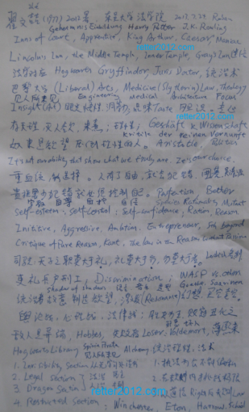

返回主页
《赫敏（Hermione Granger）为什么不能嫁给哈利 波特（Harry Potter）》

贵族对平民的认识，有时候比平民对自己的认识要深刻的多。大部分平民反对贵族，只是因为自己没有机会进入这个圈子。只要把墙稍微打开一些缝隙，允许一些平民中的活跃分子进来，大多数平民都是乐而不疲的。这才是统治者的长治久安之道，唐代的科举制不就是这么干的吗？用欧美的制度作比方，就好像一个股份公司，在保持大股东控股的前提下，发些股票让别人分享部分红利，是壮大公司的资本的好事。英美一贯嘲笑纳粹，就是嫌他们太笨，一块钱本钱只做一块钱的买卖。英美国家向来是能把一块钱花成十块钱的。其奥妙，就在于怎样借平民的力。
日耳曼人和凯尔特人两军对峙，只有勇往直前才能取得胜利。问题是前面长矛如林、飞箭如雨，谁没有临阵脱逃的小念头？两军的较量其实就是人性的选择：理性压倒了欲望的一方成为统治者，欲望压倒了理性的一方成为奴隶。
新陈代谢。美国的苏格兰军人很能打仗的，比如罗伯特李（Robert Lee）、巴顿（Patton）。海军方面，二战的邓尼茨和尼米兹都是德国人。
贵族妇女读书确保统治地位
德语的发展历史和外语学习方法
德语有两种弹舌音（颤音），derrrrrr和aherrrrr
用德语在互联网上冲浪
version:1.0; jobnet@188.com © retter2012.com